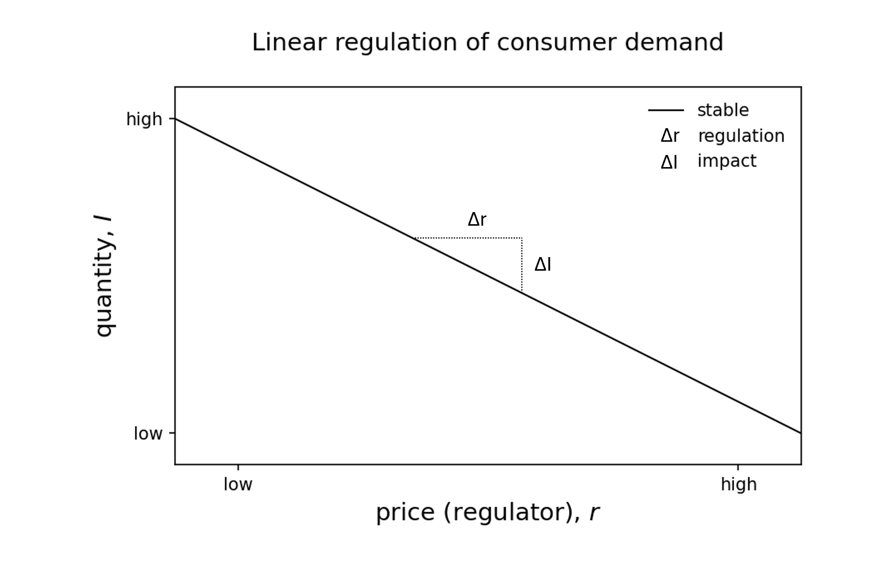
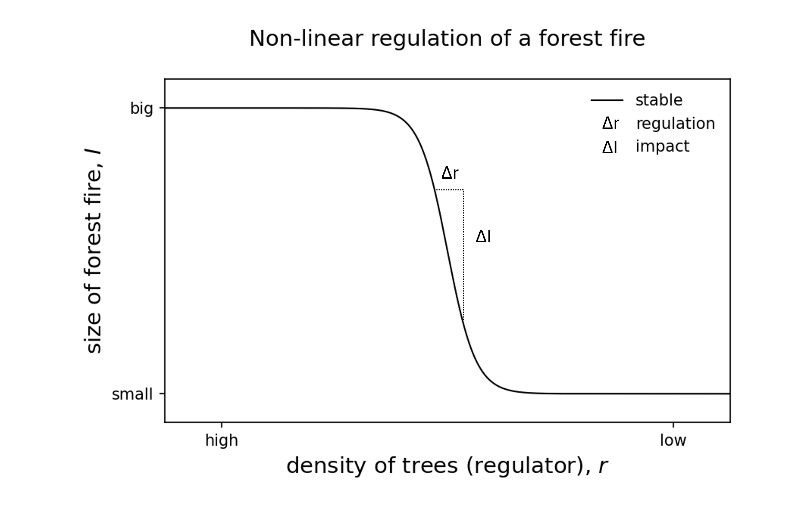
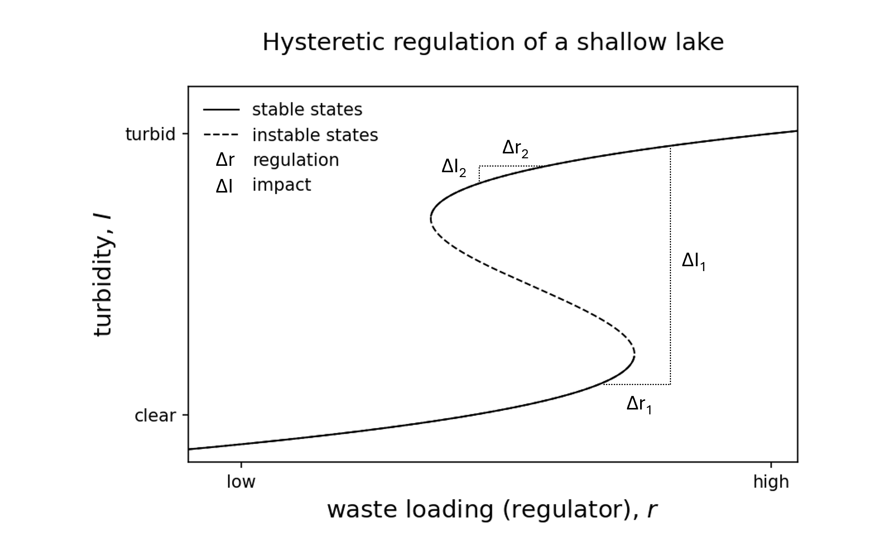
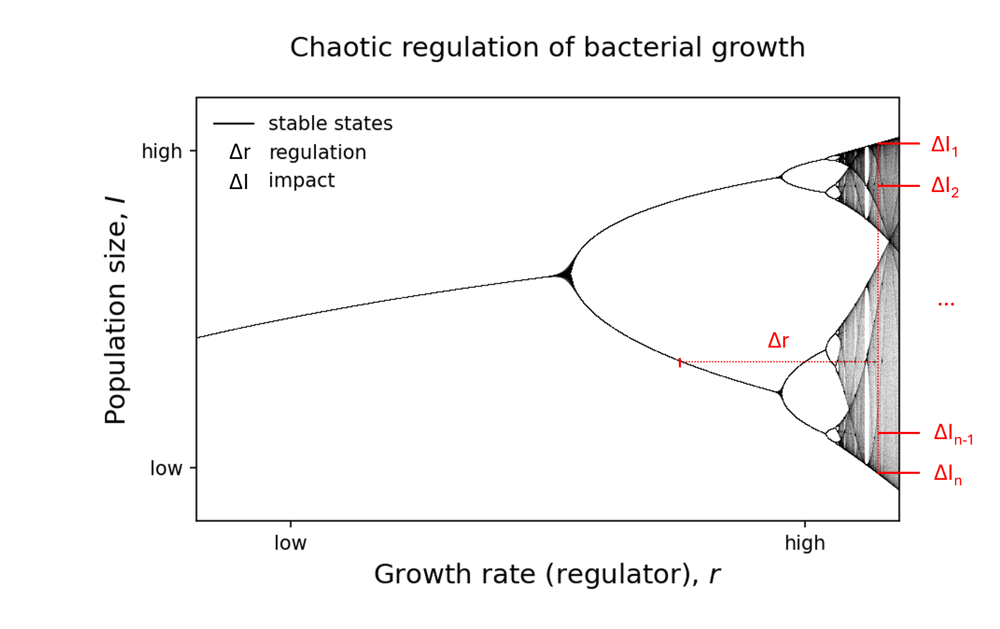

What is regulation in systems science?
"Every good regulator of a system must be a model of that system", is the title of a highly cited paper written back in 1970 [1].
Whether you have a background in law, politics, economics, biology, or physics, there is some universal truth about this proposition. Effective regulation is impossible without an accurate model of the system. Even if that model exists only implicitly in our minds, without it, any regulatory action becomes little more than blind guesswork.
In this blogpost, we will look at regulation through models or examples from various fields, moving from linear to nonlinear and ultimately to chaotic regulation. Along the way, we will see that even with accurate models at hand, there are limits to what regulation can achieve.
Linear regulation of consumer demand
In a simple linear system, regulation is straightforward. For example, increasing the price of a product (regulation) means that consumers will buy less of that product (impact). Because we have a linear demand, the relationship between regulation and impact is the same anywhere on that demand function.

Non-linear regulation of forest fires
Not all systems respond smoothly to regulation. Take a dense, overgrown forest: initially, reducing tree density (regulation) may have little to no effect on the area burned in a wildfire (impact). However, once a critical threshold is crossed, where trees are spaced far enough apart that fire struggles to spread, the fire size drops dramatically. In such a non-linear system, regulation has virtually no impact over a wide range of conditions until, suddenly, it has an enormous effect.

Hysteretic regulation of shallow lakes
Some systems can even resist back-regulation. Take a clear and healthy shallow lake: increasing waste loading (regulation) can abruptly push it into a turbid and algae-dominated state. However, once the lake has tipped, simply reducing waste (back-regulation) will not immediately restore it to its clear state. Instead, the system demands significantly stronger corrective action to overcome the hysteretic effect, making reversal far more challenging than the initial shift.

Uncertain regulation of magnets
Some systems introduce uncertainty in their response. For example, in magnets, changing the temperature past a critical point leads to a pitchfork bifurcation, where magnetization can flip to either a positive or negative state. Here, regulation works, but the direction of the impact becomes unpredictable.
Chaotic regulation of bacterial growth
What if such bifurcations keep stacking up? In chaotic systems like stylized bacterial logistic growth, regulation can become nearly impossible. Here, a small change in the population growth (regulation) can lead to potentially infinitely many different future population sizes (impact), making long-term prediction impossible. Regulating the system into this chaotic domain, actually means we are giving up more and more control over it.

Effective regulation demands an accurate model of the system’s behavior. Linear systems are easy to control, but nonlinear, hysteretic, probabilistic, or chaotic systems require careful understanding of their stability landscapes. Without this knowledge, regulation can be ineffective and costly.